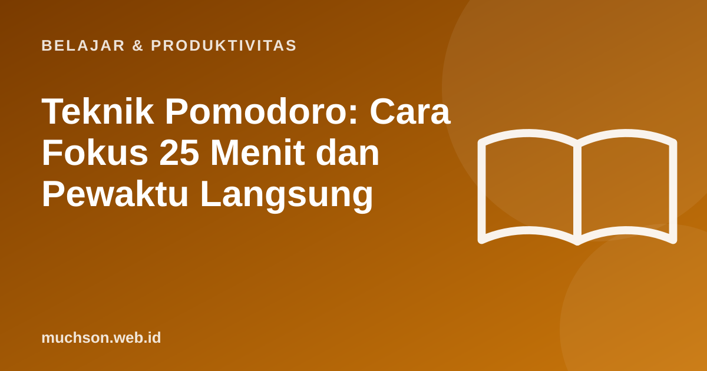

Beranda › Artikel › Belajar & Produktivitas
Belajar & ProduktivitasTeknik Pomodoro: Cara Fokus 25 Menit dan Pewaktu Langsung
Sulit memulai tugas besar, lalu mudah teralih? Teknik Pomodoro menurunkan beban awal dengan satu janji kecil: fokus penuh hanya 25 menit, lalu istirahat. Sederhana, tetapi efektif bagi banyak orang.

Aturannya
Mengapa bisa membantu
- Batas waktu yang jelas membuat memulai terasa ringan.
- Jeda teratur mengurangi kelelahan dan menjaga kualitas fokus.
- Menghitung pomodoro memberi gambaran nyata berapa lama suatu tugas.
- Gangguan dicatat dan ditunda ke jeda, bukan ditanggapi seketika.
Menyesuaikan dengan Anda
Fleksibel
Bila Anda sedang sangat larut dalam sebuah tugas, tidak perlu memutus paksa. Teknik ini alat bantu, bukan aturan. Gunakan terutama saat sulit memulai atau mudah teralih.
Tanya jawab
Bagaimana bila terganggu di tengah sesi?
Catat gangguan singkat dan kembali. Bila gangguan penting, akhiri sesi dan mulai ulang nanti.
Apakah cocok untuk belajar?
Ya, sangat cocok. Gabungkan dengan latihan mengingat kembali pada akhir tiap sesi.
Berapa pomodoro sehari yang wajar?
Banyak orang mencapai sekitar 6 sampai 10 sesi fokus berkualitas per hari. Mulai dari yang realistis.